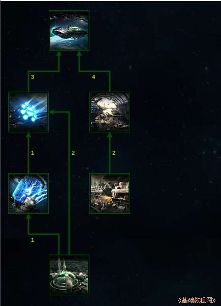
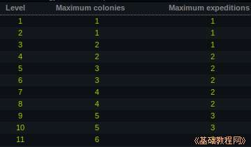
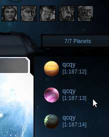
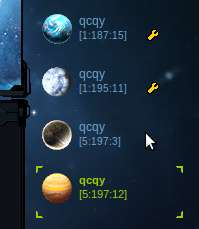

Ogame 银河帝国游戏新手入门
作者：TeliuTe 来源：基础教程网
当发展到一定实力后，就可以开辟新的星球基地；
1）进入 http://ogame.org，点右上角红色的“Login”登录；
2）在出来的登录框中，依次选择自己的星球，输入用户名、密码后点“Login”登录；
3）建造殖民舰需要将脉冲引擎(Impulse Drive)升级到3级，造船厂(Shipyard)升级到4级；

4）要殖民新的星球，还需要将天体科技(Astrophysics)升到3级，以后每两级增加一个殖民星球，即1、3、5、7...依次向上升级；

后面一列是可以派出的探险舰队数量；
5）点击造船厂中的殖民舰(Colony Ship)，就可以建造一艘殖民舰；
6）在左侧列表中，点击“舰队(Fleet)”在出来的舰船中，选择殖民舰，接下来输入星球的坐标，接下来自动选择殖民任务，可以带上几艘运输舰，带上资源一起去快速发展；
7）选择星球一般数字小的星球可能面积大些，而数字大的星球温度低，重氢产量高些；

8）殖民可以跟主星放在同一个星系，也可以选择其他的坐标星系，离得近了相互有个照应，其他星系机会更多；

9）殖民成功后，在自己的右边就会多出一个星球，可以开始新的建造发展历程，
而派去的殖民舰消失，其他运输舰自行返回；
本节学习了殖民任务的基本操作，如果你成功地完成了练习，请继续学习下一课内容；
本教程由86团学校TeliuTe制作|著作权所有
基础教程网：http://teliute.org/
美丽的校园……
转载和引用本站内容，请保留版权信息和本站链接。